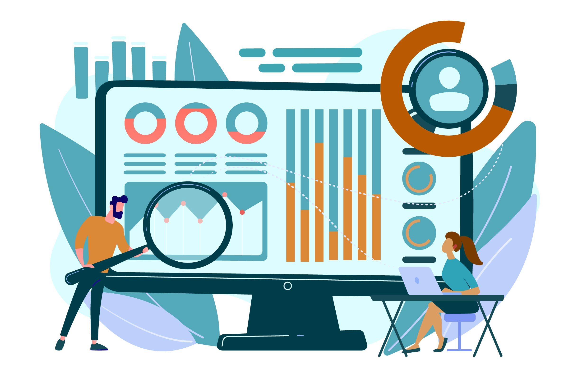

1. Stratégie marketing
- L’analyse de la demande du marché, l’identification de besoin, évaluation de la concurrence.
- Le choix de stratégies de positionnement, l’adaptation de la stratégie marketing aux cultures locales
- La segmentation du marché,l’identification des segments cibles.
- L’élaboration et la mise en place le plan marketing .
2. Coordination et gestion de projets marketing
- Le choix des canaux de communication (publicité, télé, médias sociaux, e-mails, etc.).
- La planification, création et gestion de contenu, des campagnes publicitaires, l’emailing, des médias sociaux.
- Création de contenu, de chartes graphiques, articles de blog, vidéos, infographies et dd supports de communication visuelle.
- Optimisation des budgets publicitaires
3. WEB marketing
- Création, optimisation et référencement (SEO/ SEM) des sites WEB.
- Gestion de trafic,l’analyse le tracking, l’audience et le comportement des internautes
4. Analyse de Performance :
- Collecte et analyse de données marketing pour prendre des décisions éclairées.
- Calcule et interprétation des KPIs clés (CA, ROI, Marge, les visites, les vues, le taux de conversion, le taux de rebonds, le taux de CTA, le CLTV, RFM etc.)
- Rapports sur les performances des campagnes marketing.
- Adaptation des stratégies en fonction des performances..
Engagement envers la Qualité
Je m'engage à fournir un travail de la plus haute qualité, en respectant les délais et en m'assurant que vous obtenez des résultats exceptionnels. Votre satisfaction est ma priorité absolue, et je suis déterminé à vous aider à atteindre vos objectifs en matière d'analyse de données.
Collaboration Transparente
La communication ouverte et transparente est essentielle dans notre collaboration. Je vous tiendrai informé de chaque étape du processus d'analyse, répondrai à toutes vos questions et prendrai en compte vos commentaires pour garantir que le projet réponde à vos attentes.

Estimation de ventes e-commerce
Avec l'explosion des ventes online, nous avons moins de contacts avec le client et donc, nous avons d'autant plus besoin d'étudier les habitudes d'achat, les tendances et le comportement des clients. Je propose un analyse des ventes l'une des plus grandes plateformes de commerce électronique au Pakistan. Mon objectif est de sortir l'information importante pour le conseil d'administration de l'entreprise et les aider à prendre les décisions pertinentes.
Learn more

Création Dashboard des ventes Power BI
L’exemple de projet l’analyse de vente avec la création de Dashboard . L'objectif d'un tableau de bord est de visualiser d'un seul coup d'œil les indicateurs clés de performance et les résultats les plus importants. En effet, vous disposerez d'un outil qui servira de point central pour visualiser les informations clés de votre entreprise afin d'en faciliter l'analyse et l'interprétation en vue d'une prise de décision stratégique.
Learn more
>